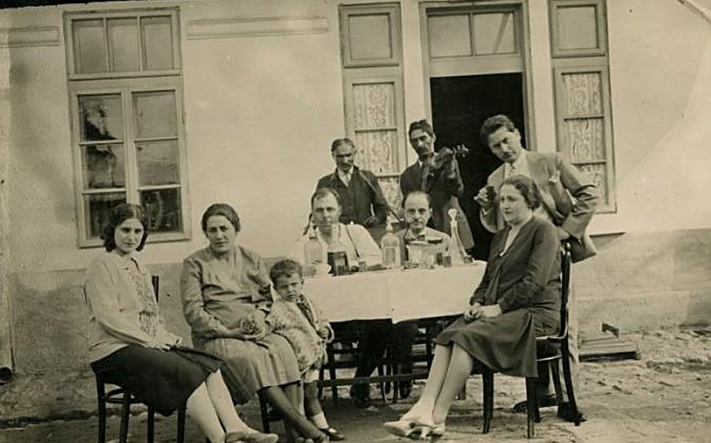
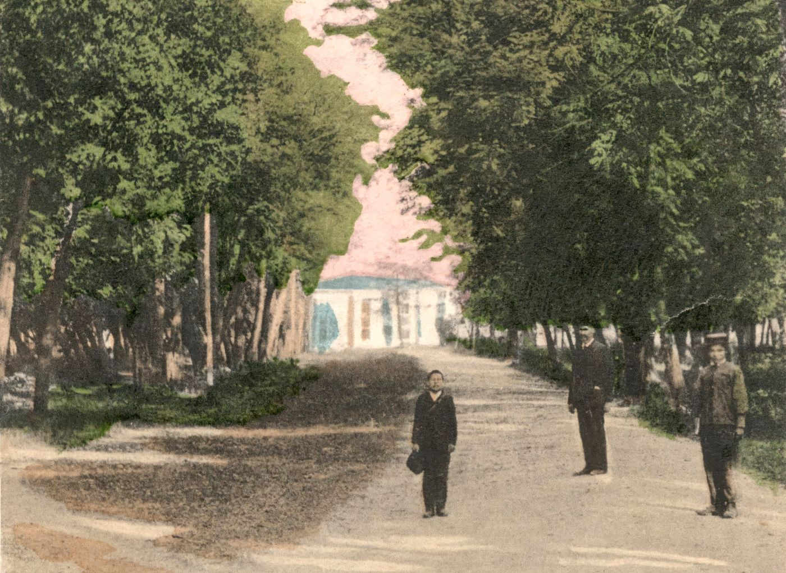
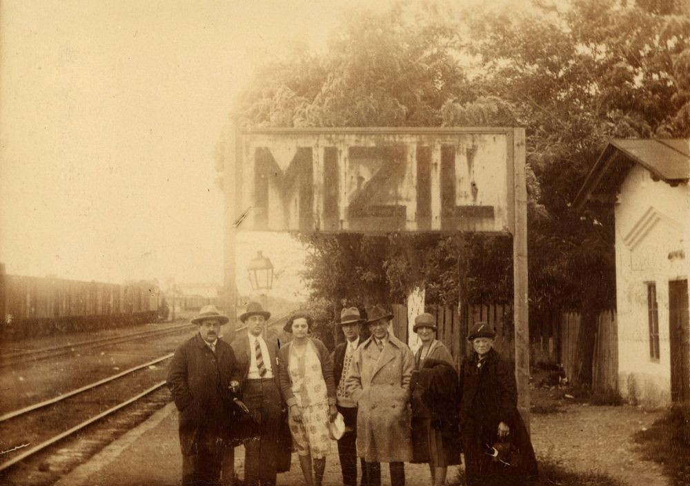
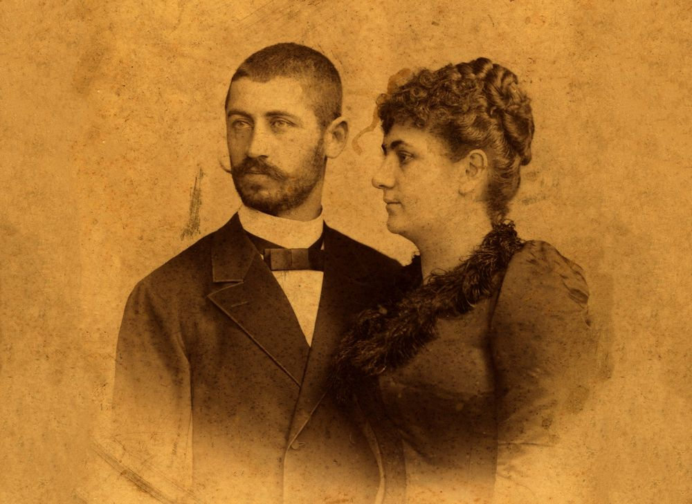

Lunga istorie a ironizării Mizilului
Aceasta începe la mijlocul secolului XIX, deschisă de Cilibi Moise cu apropoul „la Mizil pod mare și apă nicidecum”. O continuă Caragiale în 1877 cu…
Hai în necunoscut!Muzeul Sălile muzeului

Stereotipuri, hărți și măsurători: cum a devenit Mizilul etalonul marginii.
Aceasta începe la mijlocul secolului XIX, deschisă de Cilibi Moise cu apropoul „la Mizil pod mare și apă nicidecum”. O continuă Caragiale în 1877 cu…
Hai în necunoscut!În 1940 imaginea Mizilului este aproape consacrată de reportajul „O sută șaptezeci și cinci de minute la Mizil” de Geo Bogza, care va deveni referință pentru toate textele ce se vor scrie. Este amintit și de Ovidiu Eftimie, autor al micro-romanului pseudo-SF…
Hai în necunoscut!Lucrarea lui Saul Steinberg, artistul evreu plecat din România în America, care pune laolaltă toate orașele prin care a trecut, topindu-le într-o atașantă mitologie personală. Mizilenii în vârstă încă vorbesc despre…
Hai în necunoscut!
Holul central: legenda luminișului, birjarii din strada Poterașilor și un oraș care a ars de zeci de ori.

Zile negre.
Contrastele orașului: colaci și pomeni, lăutari, incendii și ruine.

Gara, trenurile și călătoriile care au legat Mizilul de lume și de literatură.

Viața publică, primarii și politica de provincie, spuse prin basmul cu cocoșul roșu.

Viața privată, căsnicii și amoruri, așa cum le-au scris teatrul și presa satirică.

Regimentul, aerodromul, războaiele, dar și teatrul și fotbalul.